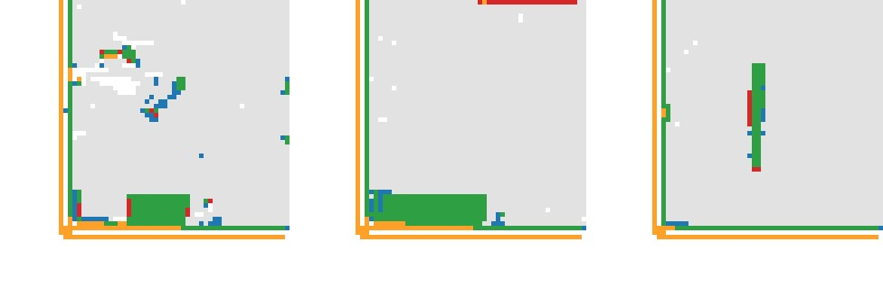
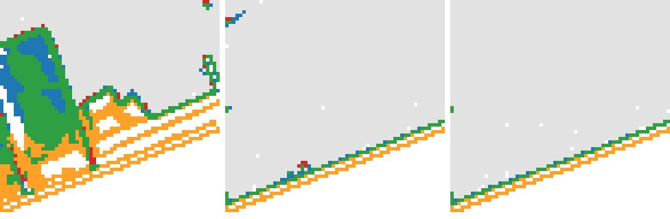
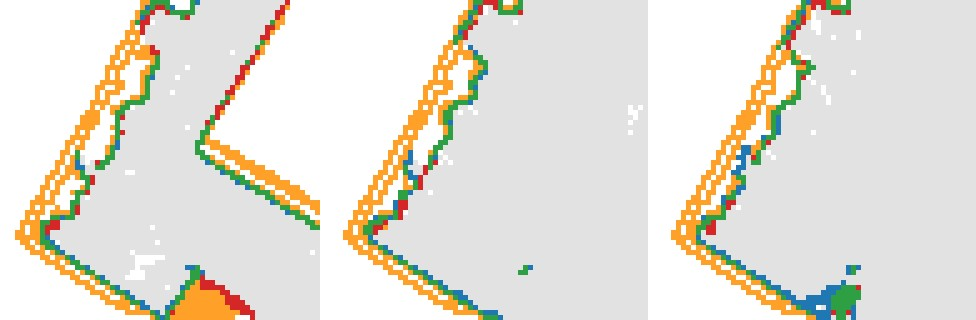
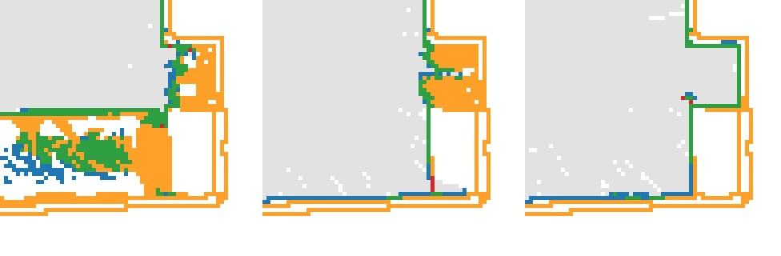
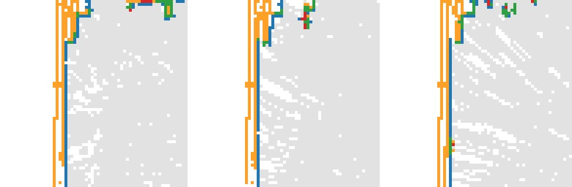

The teacher is D41 arm B + layout run on stage 1 only, with privileged real evidence the student never gets: 32 DSLR views, the full laser scan as points, and oracle layout boxes. Over 2,149 chunks from 250 ScanNet++ train scenes, 2,096 (97.5%) pass the default gate (tolerant P ≥ 0.9, tolerant R ≥ 0.85, ≥ 500 laser cells). Where the laser looked, the teacher matches it to within one cell almost everywhere (median tolerant F 0.991); strict recall is lower (0.765) mostly from one-cell offsets. It fills 1.2% of the laser-carved free space (median chunk), and about 54% of its occupancy lies where the laser never looked — the completion the student learns. The slices show what much of that is: the teacher builds walls as slabs 2–3 cells thick, and the layers behind the observed wall face fall in space the laser cannot see (orange behind green / blue wall lines), so part of the “completion” is wall thickness rather than unseen room content; where the slab sits one cell outward, the laser's wall cells count as strictly missed (blue) although they are within one cell.
| measure | p10 | p25 | median | p75 | p90 | mean |
|---|---|---|---|---|---|---|
| strict P | 0.813 | 0.857 | 0.893 | 0.920 | 0.941 | 0.883 |
| strict R | 0.601 | 0.684 | 0.765 | 0.831 | 0.872 | 0.747 |
| strict F | 0.707 | 0.765 | 0.817 | 0.857 | 0.888 | 0.804 |
| tol P | 0.974 | 0.991 | 0.996 | 0.998 | 0.999 | 0.989 |
| tol R | 0.963 | 0.980 | 0.989 | 0.994 | 0.997 | 0.983 |
| tol F | 0.966 | 0.983 | 0.991 | 0.995 | 0.997 | 0.985 |
| carved-free filled | 0.005 | 0.008 | 0.012 | 0.019 | 0.028 | 0.015 |
| outside observed | 0.372 | 0.459 | 0.537 | 0.606 | 0.681 | 0.530 |
Per chunk on the 64³ grid: teacher occupancy (decoded latent, logit > 0) vs the laser evidence it was given, in the cells the laser observed (occupied or carved free). Strict = exact cells; tolerant = within one cell. “Outside observed” = share of the teacher's occupied cells where the laser never looked.
Scenes: per-scene median strict F → the two best, the two closest to the median, the two worst. Orbit: one shared camera path, ceiling cut away; the teacher panel is the labels themselves — every chunk's saved 64³ occupancy (logit > 0) merged and meshed as voxel faces (untextured, ~4 cm cells). Slices: the chunk whose strict F is closest to the scene's median.





| scene | chunks | pass gate | strict P | strict R | strict F | tol P | tol R | free filled | outside obs |
|---|---|---|---|---|---|---|---|---|---|
| 00777c41d4 | 12 | 12 | 0.897 | 0.664 | 0.752 | 0.994 | 0.990 | 0.009 | 0.57 |
| 00a231a370 | 9 | 9 | 0.925 | 0.842 | 0.883 | 0.991 | 0.999 | 0.008 | 0.54 |
| 00dd871005 | 6 | 6 | 0.939 | 0.863 | 0.900 | 0.996 | 0.994 | 0.007 | 0.55 |
| 0271889ec0 | 8 | 8 | 0.910 | 0.815 | 0.862 | 0.998 | 0.994 | 0.012 | 0.52 |
| 027cd6ea0f | 9 | 9 | 0.899 | 0.800 | 0.839 | 0.994 | 0.984 | 0.015 | 0.52 |
| 02c2ddee2a | 4 | 4 | 0.912 | 0.735 | 0.816 | 0.997 | 0.991 | 0.014 | 0.73 |
| 02f25e5fee | 9 | 9 | 0.939 | 0.808 | 0.860 | 0.997 | 0.991 | 0.005 | 0.50 |
| 033d0b9343 | 6 | 6 | 0.899 | 0.731 | 0.815 | 0.996 | 0.986 | 0.014 | 0.54 |
| 036bce3393 | 12 | 12 | 0.883 | 0.841 | 0.855 | 0.998 | 0.990 | 0.015 | 0.47 |
| 0373d65cce | 4 | 4 | 0.883 | 0.819 | 0.849 | 0.990 | 0.998 | 0.014 | 0.47 |
| 04c23ccd1d | 4 | 2 | 0.739 | 0.546 | 0.637 | 0.904 | 0.957 | 0.028 | 0.65 |
| 04d0dc245b | 6 | 6 | 0.887 | 0.717 | 0.787 | 0.996 | 0.993 | 0.011 | 0.46 |
| 04df8734b7 | 6 | 6 | 0.901 | 0.812 | 0.848 | 0.997 | 0.990 | 0.015 | 0.51 |
| 052d72e137 | 6 | 3 | 0.750 | 0.765 | 0.769 | 0.905 | 0.991 | 0.026 | 0.49 |
| 053a94cf68 | 6 | 6 | 0.905 | 0.746 | 0.821 | 0.992 | 0.968 | 0.013 | 0.51 |
| 05d3c8c6f0 | 12 | 12 | 0.881 | 0.826 | 0.852 | 0.990 | 0.989 | 0.017 | 0.50 |
| 062e5a23a6 | 9 | 9 | 0.882 | 0.786 | 0.832 | 0.991 | 0.989 | 0.014 | 0.50 |
| 0658da5bc0 | 8 | 8 | 0.907 | 0.540 | 0.675 | 0.993 | 0.994 | 0.008 | 0.70 |
| 067e2e4e61 | 8 | 8 | 0.911 | 0.790 | 0.849 | 0.999 | 0.996 | 0.010 | 0.50 |
| 068ba2946c | 6 | 6 | 0.773 | 0.629 | 0.694 | 0.973 | 0.916 | 0.025 | 0.51 |
| 06b5863f73 | 9 | 9 | 0.926 | 0.860 | 0.893 | 0.998 | 0.997 | 0.009 | 0.46 |
| 06bc6d1b24 | 4 | 4 | 0.935 | 0.535 | 0.672 | 0.999 | 0.985 | 0.004 | 0.67 |
| 06bd2cf800 | 6 | 6 | 0.898 | 0.644 | 0.749 | 0.993 | 0.985 | 0.010 | 0.62 |
| 076c822ecc | 15 | 15 | 0.879 | 0.804 | 0.833 | 0.995 | 0.982 | 0.013 | 0.56 |
| 0796447f4b | 4 | 4 | 0.655 | 0.592 | 0.622 | 0.937 | 0.915 | 0.052 | 0.65 |
| 079a326597 | 9 | 8 | 0.811 | 0.850 | 0.815 | 0.938 | 0.992 | 0.030 | 0.50 |
| 07b8312ea9 | 6 | 6 | 0.923 | 0.545 | 0.680 | 0.996 | 0.986 | 0.006 | 0.73 |
| 07e6f56969 | 4 | 4 | 0.825 | 0.542 | 0.648 | 0.987 | 0.954 | 0.012 | 0.72 |
| 07f5b601ee | 6 | 6 | 0.894 | 0.813 | 0.838 | 0.985 | 0.994 | 0.013 | 0.54 |
| 07ff1c45bb | 6 | 1 | 0.761 | 0.841 | 0.793 | 0.882 | 0.991 | 0.028 | 0.44 |
| 086f09d6e3 | 6 | 6 | 0.886 | 0.740 | 0.810 | 0.986 | 0.966 | 0.015 | 0.47 |
| 08bbbdcc3d | 10 | 10 | 0.903 | 0.830 | 0.869 | 0.999 | 0.989 | 0.010 | 0.46 |
| 08bd80ce2a | 18 | 18 | 0.914 | 0.742 | 0.812 | 0.997 | 0.995 | 0.010 | 0.46 |
| 09a6767fc2 | 6 | 6 | 0.897 | 0.849 | 0.867 | 0.997 | 0.995 | 0.013 | 0.56 |
| 09c1414f1b | 16 | 16 | 0.885 | 0.698 | 0.788 | 0.997 | 0.994 | 0.011 | 0.52 |
| 09d6e808b4 | 9 | 9 | 0.902 | 0.625 | 0.737 | 0.993 | 0.995 | 0.007 | 0.56 |
| 0a184cf634 | 8 | 8 | 0.894 | 0.739 | 0.813 | 0.996 | 0.993 | 0.012 | 0.50 |
| 0a76e06478 | 12 | 12 | 0.930 | 0.753 | 0.831 | 0.999 | 0.980 | 0.009 | 0.59 |
| 0a7cc12c0e | 8 | 8 | 0.902 | 0.616 | 0.724 | 0.995 | 0.981 | 0.010 | 0.58 |
| 0affa0f99f | 4 | 4 | 0.930 | 0.531 | 0.676 | 0.998 | 0.973 | 0.009 | 0.78 |
| 0b031f3119 | 12 | 12 | 0.897 | 0.900 | 0.899 | 0.998 | 0.993 | 0.011 | 0.39 |
| 0b0bb941b7 | 15 | 15 | 0.859 | 0.800 | 0.828 | 0.995 | 0.988 | 0.015 | 0.44 |
| 0c5385e84b | 6 | 6 | 0.905 | 0.796 | 0.844 | 0.993 | 0.982 | 0.015 | 0.55 |
| 0c6c7145ba | 6 | 6 | 0.922 | 0.823 | 0.878 | 0.998 | 0.995 | 0.011 | 0.46 |
| 0c7962bd64 | 4 | 4 | 0.891 | 0.739 | 0.805 | 0.994 | 0.983 | 0.015 | 0.54 |
| 0caa1ae59a | 6 | 6 | 0.918 | 0.691 | 0.788 | 0.990 | 0.974 | 0.013 | 0.58 |
| 0cf2e9402d | 6 | 6 | 0.802 | 0.719 | 0.782 | 0.938 | 0.971 | 0.021 | 0.44 |
| 0d2ee665be | 11 | 11 | 0.901 | 0.821 | 0.861 | 0.999 | 0.995 | 0.010 | 0.49 |
| 0d41f3a279 | 3 | 3 | 0.776 | 0.785 | 0.793 | 0.915 | 0.981 | 0.040 | 0.57 |
| 0d8ead0038 | 4 | 4 | 0.910 | 0.724 | 0.807 | 0.999 | 0.979 | 0.017 | 0.59 |
| 0dce89ab21 | 6 | 6 | 0.850 | 0.836 | 0.853 | 0.998 | 0.985 | 0.014 | 0.48 |
| 0e100756bf | 4 | 4 | 0.884 | 0.708 | 0.786 | 0.992 | 0.987 | 0.025 | 0.58 |
| 0e28968c1f | 4 | 4 | 0.849 | 0.779 | 0.812 | 0.910 | 0.993 | 0.026 | 0.58 |
| 0e350246d3 | 6 | 6 | 0.931 | 0.806 | 0.866 | 0.996 | 0.995 | 0.007 | 0.62 |
| 0e75f3c4d9 | 15 | 15 | 0.890 | 0.676 | 0.769 | 0.995 | 0.994 | 0.011 | 0.63 |
| 0e900bcc5c | 4 | 4 | 0.927 | 0.738 | 0.821 | 0.989 | 0.994 | 0.013 | 0.76 |
| 0eba3981c9 | 9 | 9 | 0.912 | 0.795 | 0.848 | 0.996 | 0.992 | 0.010 | 0.49 |
| 0f0191b10b | 12 | 12 | 0.930 | 0.722 | 0.816 | 0.997 | 0.991 | 0.006 | 0.45 |
| 0f25f24a4f | 22 | 22 | 0.829 | 0.839 | 0.843 | 0.998 | 0.990 | 0.025 | 0.47 |
| 0f3474b837 | 6 | 6 | 0.874 | 0.700 | 0.775 | 0.996 | 0.973 | 0.019 | 0.50 |
| 0f69aefe3d | 4 | 4 | 0.886 | 0.783 | 0.831 | 0.994 | 0.996 | 0.019 | 0.53 |
| 0fa1fdd47b | 4 | 4 | 0.791 | 0.641 | 0.708 | 0.907 | 0.986 | 0.040 | 0.67 |
| 0fe8539661 | 25 | 25 | 0.777 | 0.830 | 0.789 | 0.996 | 0.995 | 0.024 | 0.53 |
| 104acbf7d2 | 18 | 18 | 0.884 | 0.672 | 0.764 | 0.990 | 0.989 | 0.015 | 0.63 |
| 108ec0b806 | 9 | 9 | 0.884 | 0.776 | 0.832 | 0.995 | 0.990 | 0.016 | 0.53 |
| 10c8ab99f4 | 6 | 6 | 0.755 | 0.725 | 0.750 | 0.943 | 0.981 | 0.031 | 0.57 |
| 10eda02798 | 4 | 4 | 0.900 | 0.682 | 0.776 | 0.996 | 0.985 | 0.014 | 0.64 |
| 1117299565 | 6 | 6 | 0.908 | 0.513 | 0.648 | 0.994 | 0.987 | 0.007 | 0.69 |
| 114e349224 | 4 | 4 | 0.919 | 0.730 | 0.813 | 0.993 | 0.987 | 0.010 | 0.53 |
| 11fc9df3a0 | 12 | 9 | 0.783 | 0.688 | 0.743 | 0.976 | 0.910 | 0.025 | 0.62 |
| 1204e08f17 | 11 | 6 | 0.926 | 0.846 | 0.864 | 0.998 | 0.995 | 0.007 | 0.73 |
| 120acffd90 | 15 | 15 | 0.842 | 0.363 | 0.518 | 0.994 | 0.985 | 0.004 | 0.76 |
| 124a6e789b | 12 | 12 | 0.881 | 0.863 | 0.867 | 0.997 | 0.992 | 0.011 | 0.46 |
| 126d03d821 | 8 | 8 | 0.917 | 0.796 | 0.844 | 0.999 | 0.990 | 0.010 | 0.50 |
| 12b2b1c6d9 | 9 | 9 | 0.906 | 0.659 | 0.768 | 0.994 | 0.993 | 0.008 | 0.61 |
| 12c0f7a7da | 2 | 2 | 0.882 | 0.694 | 0.774 | 0.998 | 0.996 | 0.017 | 0.63 |
| 13285009a4 | 12 | 12 | 0.782 | 0.677 | 0.733 | 0.980 | 0.963 | 0.045 | 0.52 |
| 132cb783ed | 4 | 4 | 0.923 | 0.682 | 0.787 | 0.996 | 0.986 | 0.009 | 0.56 |
| 1366d5ae89 | 6 | 6 | 0.903 | 0.809 | 0.853 | 0.999 | 0.990 | 0.012 | 0.45 |
| 13b4efaf62 | 6 | 6 | 0.931 | 0.729 | 0.817 | 0.999 | 0.987 | 0.007 | 0.46 |
| 13c3e046d7 | 8 | 8 | 0.825 | 0.754 | 0.782 | 0.985 | 0.977 | 0.031 | 0.43 |
| 15c4aa5bbb | 12 | 12 | 0.919 | 0.866 | 0.887 | 0.998 | 0.994 | 0.008 | 0.53 |
| 16c9bd2e1e | 6 | 6 | 0.952 | 0.810 | 0.876 | 1.000 | 0.996 | 0.004 | 0.51 |
| 17268bec90 | 6 | 6 | 0.896 | 0.618 | 0.722 | 0.998 | 0.988 | 0.006 | 0.61 |
| 1730c7d709 | 6 | 6 | 0.778 | 0.730 | 0.753 | 0.966 | 0.898 | 0.029 | 0.44 |
| 17a5e7d36c | 6 | 6 | 0.929 | 0.761 | 0.830 | 0.997 | 0.988 | 0.006 | 0.53 |
| 17c5e6a336 | 6 | 6 | 0.916 | 0.680 | 0.780 | 0.998 | 0.996 | 0.008 | 0.61 |
| 182932a4f3 | 8 | 8 | 0.929 | 0.813 | 0.865 | 0.999 | 0.991 | 0.010 | 0.56 |
| 1831b3823a | 6 | 6 | 0.847 | 0.625 | 0.716 | 0.996 | 0.981 | 0.018 | 0.45 |
| 1841a0b525 | 8 | 8 | 0.893 | 0.682 | 0.776 | 0.996 | 0.988 | 0.009 | 0.54 |
| 192ab15daf | 8 | 8 | 0.890 | 0.772 | 0.833 | 0.994 | 0.991 | 0.014 | 0.48 |
| 193672f661 | 9 | 9 | 0.902 | 0.760 | 0.826 | 0.995 | 0.977 | 0.011 | 0.53 |
| 196876abd7 | 6 | 6 | 0.925 | 0.805 | 0.855 | 0.998 | 0.993 | 0.009 | 0.56 |
| 19cfd590f4 | 9 | 9 | 0.866 | 0.863 | 0.863 | 0.997 | 0.994 | 0.015 | 0.43 |
| 1a130d092a | 6 | 6 | 0.872 | 0.553 | 0.672 | 0.994 | 0.982 | 0.011 | 0.58 |
| 1a22a99186 | 9 | 9 | 0.937 | 0.806 | 0.860 | 0.997 | 0.989 | 0.007 | 0.54 |
| 1a3100752b | 9 | 9 | 0.861 | 0.480 | 0.623 | 0.996 | 0.995 | 0.006 | 0.71 |
| 1a8e0d78c0 | 6 | 2 | 0.769 | 0.766 | 0.759 | 0.867 | 0.983 | 0.022 | 0.48 |
| 1ada7a0617 | 6 | 6 | 0.922 | 0.773 | 0.833 | 0.997 | 0.993 | 0.008 | 0.55 |
| 1ae9e5d2a6 | 6 | 6 | 0.923 | 0.755 | 0.831 | 0.998 | 0.991 | 0.009 | 0.56 |
| 1b379f1114 | 15 | 13 | 0.913 | 0.799 | 0.835 | 0.997 | 0.994 | 0.009 | 0.61 |
| 1b75758486 | 9 | 9 | 0.887 | 0.695 | 0.764 | 0.997 | 0.993 | 0.011 | 0.46 |
| 1b9692f0c7 | 2 | 2 | 0.897 | 0.728 | 0.803 | 0.989 | 0.979 | 0.020 | 0.64 |
| 1bb93d185e | 8 | 8 | 0.932 | 0.825 | 0.866 | 0.999 | 0.993 | 0.007 | 0.55 |
| 1c08823a41 | 6 | 6 | 0.882 | 0.678 | 0.768 | 0.981 | 0.994 | 0.011 | 0.61 |
| 1c4b893630 | 4 | 4 | 0.882 | 0.791 | 0.827 | 0.996 | 0.995 | 0.017 | 0.51 |
| 1c7a683c92 | 9 | 9 | 0.919 | 0.834 | 0.856 | 0.996 | 0.996 | 0.006 | 0.43 |
| 1cefb55d50 | 14 | 14 | 0.891 | 0.746 | 0.803 | 0.995 | 0.987 | 0.014 | 0.56 |
| 1d003b07bd | 6 | 6 | 0.909 | 0.809 | 0.857 | 0.996 | 0.990 | 0.010 | 0.41 |
| 1d34f56de8 | 6 | 6 | 0.897 | 0.877 | 0.887 | 0.994 | 0.991 | 0.010 | 0.43 |
| 1e52e4c88f | 12 | 12 | 0.886 | 0.752 | 0.821 | 0.994 | 0.964 | 0.014 | 0.45 |
| 1eacc65607 | 6 | 6 | 0.887 | 0.688 | 0.777 | 0.994 | 0.995 | 0.013 | 0.48 |
| 1f7cbbdde1 | 10 | 10 | 0.902 | 0.751 | 0.831 | 0.999 | 0.989 | 0.011 | 0.49 |
| 1fb6538f81 | 12 | 12 | 0.883 | 0.631 | 0.736 | 0.995 | 0.983 | 0.010 | 0.55 |
| 20207b4844 | 6 | 6 | 0.947 | 0.722 | 0.816 | 0.999 | 0.989 | 0.005 | 0.50 |
| 206bccc898 | 2 | 2 | 0.888 | 0.697 | 0.781 | 0.994 | 0.980 | 0.036 | 0.64 |
| 20871b98f3 | 4 | 4 | 0.823 | 0.723 | 0.768 | 0.928 | 0.980 | 0.025 | 0.47 |
| 20ff72df6e | 2 | 2 | 0.858 | 0.579 | 0.690 | 0.993 | 0.989 | 0.023 | 0.71 |
| 210f741378 | 12 | 12 | 0.877 | 0.649 | 0.745 | 0.995 | 0.985 | 0.013 | 0.58 |
| 2150596d57 | 16 | 16 | 0.882 | 0.793 | 0.831 | 0.994 | 0.989 | 0.017 | 0.50 |
| 2162a7cf14 | 6 | 1 | 0.747 | 0.866 | 0.803 | 0.876 | 0.992 | 0.031 | 0.46 |
| 216b9e55e8 | 9 | 9 | 0.896 | 0.665 | 0.773 | 0.996 | 0.994 | 0.007 | 0.56 |
| 21c5ee0ca5 | 13 | 13 | 0.944 | 0.698 | 0.790 | 0.998 | 0.996 | 0.008 | 0.58 |
| 21d970d8de | 11 | 11 | 0.893 | 0.860 | 0.882 | 0.998 | 0.993 | 0.010 | 0.46 |
| 2267ee32f3 | 6 | 6 | 0.896 | 0.540 | 0.675 | 0.994 | 0.965 | 0.011 | 0.58 |
| 2284bf5c9d | 6 | 6 | 0.929 | 0.785 | 0.851 | 0.999 | 0.988 | 0.006 | 0.52 |
| 238b940049 | 6 | 6 | 0.949 | 0.762 | 0.845 | 0.999 | 0.986 | 0.005 | 0.40 |
| 246fe09e98 | 8 | 8 | 0.940 | 0.848 | 0.888 | 0.998 | 0.995 | 0.008 | 0.52 |
| 2489b7f4fe | 12 | 12 | 0.852 | 0.721 | 0.782 | 0.994 | 0.965 | 0.021 | 0.48 |
| 24b248e676 | 6 | 6 | 0.937 | 0.788 | 0.862 | 0.999 | 0.995 | 0.007 | 0.49 |
| 251443268c | 6 | 6 | 0.921 | 0.783 | 0.856 | 0.999 | 0.993 | 0.011 | 0.55 |
| 25927bb04c | 6 | 6 | 0.897 | 0.775 | 0.829 | 0.998 | 0.994 | 0.013 | 0.43 |
| 25aa952aa3 | 2 | 2 | 0.861 | 0.716 | 0.782 | 0.996 | 0.988 | 0.032 | 0.56 |
| 25bae29ab3 | 16 | 16 | 0.929 | 0.865 | 0.892 | 1.000 | 0.997 | 0.008 | 0.49 |
| 25bde9e167 | 11 | 11 | 0.915 | 0.631 | 0.742 | 0.991 | 0.987 | 0.010 | 0.60 |
| 25f3b7a318 | 8 | 8 | 0.907 | 0.707 | 0.796 | 0.997 | 0.975 | 0.012 | 0.57 |
| 260db9cf5a | 6 | 6 | 0.912 | 0.826 | 0.863 | 0.999 | 0.994 | 0.011 | 0.44 |
| 2634683a9f | 8 | 8 | 0.867 | 0.816 | 0.845 | 0.971 | 0.995 | 0.018 | 0.48 |
| 268513240f | 9 | 9 | 0.920 | 0.808 | 0.817 | 0.997 | 0.994 | 0.009 | 0.55 |
| 269fa95eb3 | 18 | 18 | 0.839 | 0.708 | 0.766 | 0.995 | 0.954 | 0.021 | 0.49 |
| 270ada6f0d | 20 | 20 | 0.848 | 0.786 | 0.823 | 0.994 | 0.981 | 0.016 | 0.42 |
| 2748de13fb | 9 | 6 | 0.845 | 0.497 | 0.638 | 0.993 | 0.861 | 0.007 | 0.67 |
| 2779f8f9e2 | 6 | 6 | 0.915 | 0.842 | 0.878 | 0.997 | 0.997 | 0.008 | 0.50 |
| 27be88d408 | 9 | 9 | 0.924 | 0.788 | 0.851 | 0.999 | 0.995 | 0.010 | 0.59 |
| 27dc178a3d | 6 | 6 | 0.815 | 0.771 | 0.793 | 0.945 | 0.989 | 0.026 | 0.61 |
| 27dd4da69e | 8 | 8 | 0.883 | 0.820 | 0.852 | 0.997 | 0.989 | 0.016 | 0.47 |
| 281ba69af1 | 19 | 19 | 0.892 | 0.749 | 0.814 | 0.996 | 0.991 | 0.015 | 0.55 |
| 281bc17764 | 6 | 4 | 0.791 | 0.791 | 0.793 | 0.904 | 0.993 | 0.016 | 0.51 |
| 286b55a2bf | 4 | 4 | 0.848 | 0.763 | 0.803 | 0.995 | 0.989 | 0.030 | 0.57 |
| 28a9ee4557 | 6 | 6 | 0.924 | 0.770 | 0.830 | 1.000 | 0.994 | 0.007 | 0.52 |
| 28fec555cd | 6 | 6 | 0.911 | 0.860 | 0.886 | 0.995 | 0.995 | 0.013 | 0.49 |
| 290ef3f2c9 | 9 | 9 | 0.863 | 0.791 | 0.801 | 0.981 | 0.982 | 0.027 | 0.45 |
| 2970e95b65 | 12 | 12 | 0.883 | 0.827 | 0.851 | 0.998 | 0.966 | 0.013 | 0.46 |
| 29b18b8c4f | 9 | 9 | 0.866 | 0.663 | 0.758 | 0.991 | 0.979 | 0.017 | 0.60 |
| 29c7afafed | 6 | 5 | 0.808 | 0.773 | 0.789 | 0.940 | 0.984 | 0.026 | 0.54 |
| 2a1b555966 | 23 | 23 | 0.915 | 0.856 | 0.880 | 0.994 | 0.993 | 0.011 | 0.45 |
| 2a496183e1 | 6 | 6 | 0.920 | 0.821 | 0.863 | 0.997 | 0.997 | 0.011 | 0.47 |
| 2ab7bea148 | 8 | 8 | 0.929 | 0.765 | 0.839 | 0.998 | 0.991 | 0.008 | 0.50 |
| 2b1dc6d6a5 | 6 | 6 | 0.926 | 0.825 | 0.868 | 0.998 | 0.993 | 0.011 | 0.47 |
| 2b5ef64cad | 21 | 20 | 0.820 | 0.707 | 0.754 | 0.984 | 0.979 | 0.027 | 0.47 |
| 2b71155e0d | 8 | 8 | 0.882 | 0.552 | 0.682 | 0.998 | 0.962 | 0.008 | 0.65 |
| 2c7c10379b | 30 | 29 | 0.861 | 0.737 | 0.789 | 0.991 | 0.986 | 0.019 | 0.59 |
| 2d2e873aa0 | 16 | 16 | 0.895 | 0.857 | 0.867 | 0.997 | 0.989 | 0.013 | 0.49 |
| 2d58610dce | 6 | 6 | 0.931 | 0.760 | 0.843 | 1.000 | 0.988 | 0.007 | 0.54 |
| 2e5c249de3 | 6 | 6 | 0.906 | 0.713 | 0.805 | 0.998 | 0.998 | 0.007 | 0.59 |
| 2e74812d00 | 9 | 9 | 0.889 | 0.866 | 0.870 | 0.996 | 0.994 | 0.014 | 0.42 |
| 2ebbca3e57 | 2 | 2 | 0.933 | 0.663 | 0.775 | 0.999 | 0.999 | 0.010 | 0.66 |
| 2f5996ff01 | 6 | 6 | 0.821 | 0.565 | 0.656 | 0.989 | 0.903 | 0.018 | 0.71 |
| 2f6f83ea1f | 10 | 10 | 0.932 | 0.785 | 0.852 | 1.000 | 0.991 | 0.007 | 0.57 |
| 302a7f6b67 | 6 | 6 | 0.929 | 0.628 | 0.750 | 0.997 | 0.993 | 0.006 | 0.52 |
| 303745abc7 | 6 | 6 | 0.902 | 0.758 | 0.826 | 0.997 | 0.988 | 0.011 | 0.54 |
| 307e3262f1 | 12 | 12 | 0.893 | 0.642 | 0.753 | 0.996 | 0.963 | 0.009 | 0.62 |
| 30966f4c6e | 13 | 13 | 0.944 | 0.660 | 0.769 | 0.996 | 0.997 | 0.004 | 0.78 |
| 30f4a2b44d | 4 | 4 | 0.874 | 0.658 | 0.746 | 0.993 | 0.997 | 0.009 | 0.71 |
| 3134f5f3d6 | 14 | 14 | 0.883 | 0.885 | 0.870 | 0.996 | 0.991 | 0.009 | 0.41 |
| 31a2c91c43 | 4 | 4 | 0.921 | 0.745 | 0.823 | 0.997 | 0.994 | 0.009 | 0.54 |
| 320c3af000 | 9 | 9 | 0.887 | 0.839 | 0.857 | 0.997 | 0.995 | 0.015 | 0.49 |
| 32280ecbca | 8 | 6 | 0.771 | 0.650 | 0.697 | 0.920 | 0.924 | 0.027 | 0.55 |
| 324d07a5b3 | 8 | 8 | 0.917 | 0.761 | 0.829 | 0.995 | 0.989 | 0.009 | 0.57 |
| 3391ff8a71 | 4 | 4 | 0.943 | 0.780 | 0.852 | 0.999 | 0.993 | 0.008 | 0.50 |
| 33f78338cd | 6 | 6 | 0.839 | 0.804 | 0.817 | 0.979 | 0.978 | 0.020 | 0.53 |
| 3423e509af | 6 | 6 | 0.901 | 0.711 | 0.806 | 0.998 | 0.984 | 0.014 | 0.56 |
| 3549335582 | 4 | 4 | 0.891 | 0.440 | 0.590 | 0.996 | 0.967 | 0.007 | 0.71 |
| 354e4a0a50 | 9 | 9 | 0.911 | 0.857 | 0.889 | 0.996 | 0.995 | 0.009 | 0.49 |
| 355e5e32db | 15 | 15 | 0.877 | 0.658 | 0.751 | 0.995 | 0.987 | 0.015 | 0.54 |
| 3583c4c70f | 6 | 6 | 0.905 | 0.791 | 0.847 | 0.998 | 0.988 | 0.013 | 0.54 |
| 3597f00367 | 16 | 16 | 0.874 | 0.770 | 0.813 | 0.989 | 0.969 | 0.009 | 0.46 |
| 35f2120068 | 4 | 4 | 0.886 | 0.789 | 0.834 | 0.991 | 0.977 | 0.014 | 0.48 |
| 364f01bc18 | 6 | 6 | 0.835 | 0.800 | 0.818 | 0.977 | 0.980 | 0.018 | 0.37 |
| 373ac8fbdd | 19 | 19 | 0.911 | 0.849 | 0.867 | 0.998 | 0.990 | 0.011 | 0.46 |
| 37562e7f48 | 6 | 6 | 0.932 | 0.837 | 0.882 | 0.996 | 0.996 | 0.008 | 0.53 |
| 3799bd47b3 | 12 | 12 | 0.899 | 0.854 | 0.874 | 0.997 | 0.995 | 0.014 | 0.52 |
| 37c9538a2b | 9 | 9 | 0.929 | 0.728 | 0.820 | 0.998 | 0.992 | 0.007 | 0.63 |
| 37ea1c52f0 | 9 | 9 | 0.882 | 0.827 | 0.859 | 0.996 | 0.987 | 0.012 | 0.52 |
| 3864514494 | 6 | 6 | 0.889 | 0.805 | 0.839 | 0.987 | 0.983 | 0.019 | 0.59 |
| 3878be46f0 | 9 | 9 | 0.903 | 0.766 | 0.837 | 0.994 | 0.994 | 0.014 | 0.58 |
| 38d58a7a31 | 16 | 16 | 0.827 | 0.762 | 0.796 | 0.997 | 0.970 | 0.016 | 0.44 |
| 38fcf02d0b | 6 | 6 | 0.924 | 0.730 | 0.810 | 0.998 | 0.991 | 0.012 | 0.51 |
| 390eda9157 | 21 | 21 | 0.894 | 0.796 | 0.842 | 0.999 | 0.991 | 0.012 | 0.56 |
| 3928249b53 | 6 | 6 | 0.904 | 0.804 | 0.851 | 0.999 | 0.981 | 0.011 | 0.40 |
| 394a542a19 | 6 | 6 | 0.908 | 0.911 | 0.909 | 0.990 | 0.993 | 0.010 | 0.33 |
| 39580e2a43 | 6 | 6 | 0.903 | 0.821 | 0.849 | 0.997 | 0.993 | 0.016 | 0.56 |
| 39705fbdf1 | 12 | 12 | 0.906 | 0.782 | 0.845 | 0.996 | 0.984 | 0.009 | 0.51 |
| 39e6ee46df | 17 | 17 | 0.820 | 0.871 | 0.849 | 0.993 | 0.988 | 0.027 | 0.53 |
| 39f36da05b | 6 | 6 | 0.830 | 0.702 | 0.772 | 0.939 | 0.992 | 0.011 | 0.56 |
| 3a3745a437 | 9 | 9 | 0.919 | 0.736 | 0.802 | 0.994 | 0.988 | 0.009 | 0.59 |
| 3a43c7b8d2 | 12 | 12 | 0.911 | 0.832 | 0.879 | 0.996 | 0.985 | 0.009 | 0.45 |
| 3a520af32a | 9 | 9 | 0.931 | 0.802 | 0.867 | 0.999 | 0.995 | 0.009 | 0.63 |
| 3aa115e55e | 9 | 9 | 0.860 | 0.827 | 0.830 | 0.997 | 0.983 | 0.011 | 0.46 |
| 3b50ff5f35 | 8 | 8 | 0.944 | 0.807 | 0.864 | 0.999 | 0.991 | 0.006 | 0.54 |
| 3b753d9ae8 | 12 | 12 | 0.877 | 0.674 | 0.757 | 0.996 | 0.984 | 0.012 | 0.55 |
| 3b90310b1c | 4 | 4 | 0.910 | 0.742 | 0.815 | 0.999 | 0.981 | 0.014 | 0.58 |
| 3c8d535d49 | 15 | 15 | 0.924 | 0.872 | 0.897 | 0.999 | 0.996 | 0.007 | 0.44 |
| 3c95c89d61 | 7 | 4 | 0.770 | 0.789 | 0.782 | 0.902 | 0.971 | 0.024 | 0.50 |
| 3caf4324fd | 24 | 21 | 0.913 | 0.727 | 0.743 | 0.998 | 0.990 | 0.009 | 0.58 |
| 3cb9f85891 | 8 | 5 | 0.956 | 0.509 | 0.661 | 0.997 | 0.914 | 0.006 | 0.67 |
| 3cbb18c391 | 6 | 6 | 0.911 | 0.812 | 0.860 | 0.994 | 0.993 | 0.012 | 0.62 |
| 3ce6d36ab5 | 6 | 6 | 0.924 | 0.721 | 0.810 | 0.998 | 0.986 | 0.008 | 0.52 |
| 3ce88cdad2 | 8 | 8 | 0.919 | 0.819 | 0.862 | 0.994 | 0.991 | 0.011 | 0.54 |
| 3d0b7d4b4e | 12 | 12 | 0.909 | 0.799 | 0.848 | 0.995 | 0.988 | 0.013 | 0.56 |
| 3d838ee1ab | 15 | 15 | 0.895 | 0.589 | 0.715 | 0.993 | 0.985 | 0.011 | 0.56 |
| 3db0a1c8f3 | 22 | 22 | 0.869 | 0.780 | 0.821 | 0.994 | 0.986 | 0.021 | 0.64 |
| 3e7e4b07c4 | 9 | 9 | 0.905 | 0.609 | 0.718 | 0.994 | 0.987 | 0.012 | 0.59 |
| 3e8bba0176 | 6 | 6 | 0.898 | 0.763 | 0.817 | 0.998 | 0.984 | 0.010 | 0.52 |
| 3e928dc2f6 | 4 | 4 | 0.954 | 0.607 | 0.742 | 0.999 | 0.984 | 0.004 | 0.71 |
| 3e9a598891 | 4 | 4 | 0.887 | 0.762 | 0.820 | 0.998 | 0.988 | 0.022 | 0.56 |
| 3eba679830 | 12 | 12 | 0.876 | 0.791 | 0.835 | 0.996 | 0.994 | 0.017 | 0.55 |
| 3ee9d33aef | 9 | 9 | 0.918 | 0.841 | 0.874 | 0.999 | 0.995 | 0.012 | 0.48 |
| 3f15a9266d | 6 | 6 | 0.909 | 0.719 | 0.804 | 0.998 | 0.976 | 0.009 | 0.51 |
| 3f1e1610de | 8 | 8 | 0.878 | 0.879 | 0.864 | 0.999 | 0.993 | 0.015 | 0.60 |
| 3f6ee92fd7 | 6 | 6 | 0.901 | 0.625 | 0.727 | 0.999 | 0.990 | 0.009 | 0.57 |
| 3ff873c77e | 6 | 6 | 0.814 | 0.775 | 0.794 | 0.907 | 0.994 | 0.029 | 0.49 |
| 40aec5fffa | 3 | 3 | 0.897 | 0.580 | 0.705 | 0.992 | 0.961 | 0.012 | 0.66 |
| 40b56bf310 | 10 | 10 | 0.910 | 0.819 | 0.863 | 0.994 | 0.994 | 0.011 | 0.79 |
| 410c470782 | 20 | 20 | 0.887 | 0.758 | 0.826 | 0.996 | 0.985 | 0.015 | 0.55 |
| 4117a4f02c | 4 | 4 | 0.851 | 0.699 | 0.767 | 0.991 | 0.985 | 0.032 | 0.48 |
| 413085a827 | 6 | 6 | 0.903 | 0.753 | 0.823 | 0.989 | 0.987 | 0.011 | 0.48 |
| 419cbe7c11 | 6 | 6 | 0.917 | 0.808 | 0.861 | 0.997 | 0.996 | 0.010 | 0.44 |
| 41b00feddb | 12 | 12 | 0.853 | 0.757 | 0.797 | 0.995 | 0.987 | 0.027 | 0.50 |
| 41eb967018 | 9 | 9 | 0.892 | 0.701 | 0.791 | 0.999 | 0.993 | 0.015 | 0.57 |
| 4291be3b44 | 6 | 5 | 0.908 | 0.467 | 0.617 | 0.991 | 0.903 | 0.005 | 0.71 |
| 4318f8bb3c | 6 | 6 | 0.916 | 0.852 | 0.883 | 0.996 | 0.992 | 0.010 | 0.49 |
| 4380e4646a | 8 | 5 | 0.831 | 0.835 | 0.824 | 0.920 | 0.994 | 0.026 | 0.55 |
| 43cd995c51 | 6 | 6 | 0.890 | 0.518 | 0.660 | 0.998 | 0.967 | 0.009 | 0.69 |
| 4423a61d09 | 6 | 6 | 0.851 | 0.661 | 0.744 | 0.996 | 0.993 | 0.013 | 0.55 |
| 442b144761 | 6 | 6 | 0.893 | 0.810 | 0.850 | 0.998 | 0.983 | 0.011 | 0.45 |
| 44c85584ae | 9 | 9 | 0.888 | 0.855 | 0.863 | 0.992 | 0.998 | 0.011 | 0.59 |
| 4517d988d8 | 12 | 12 | 0.883 | 0.567 | 0.694 | 0.994 | 0.947 | 0.011 | 0.54 |
| 45b0dac5e3 | 6 | 6 | 0.915 | 0.725 | 0.810 | 0.996 | 0.985 | 0.015 | 0.57 |
| 45d2e33be1 | 6 | 6 | 0.890 | 0.677 | 0.760 | 0.992 | 0.984 | 0.014 | 0.53 |
Source: experiments/genrecon_eval/d44_teacher_latents/ (manifest.json, <scene>/scene.json, chunk npz files); summary in data/summary.json.